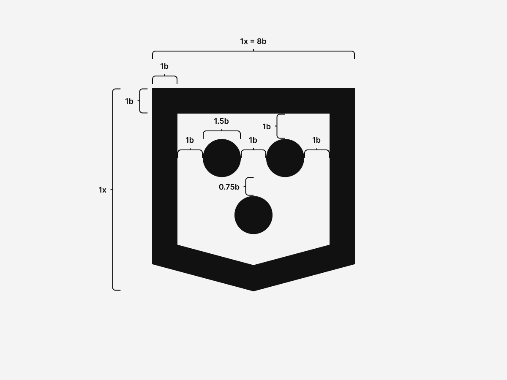
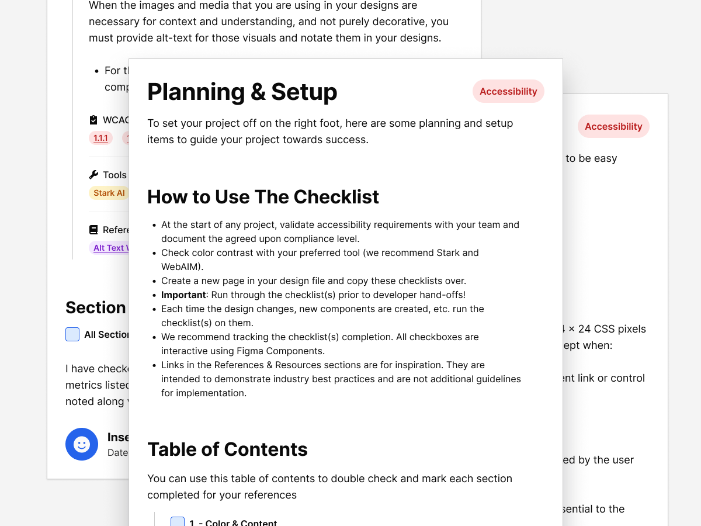

Building My Brand: A Case Study in Minimalism, Modularity, and Meaning
Branding
Development
Graphic Design
UI + UX
Most of my professional work sits under NDA, which limits what I can show publicly. So I built this — a case study that demonstrates how I think and work through design challenges.
This project isn't just about a logo or website. It's about applying design systems, accessibility, and UX principles to create a cohesive, performant, and extensible identity — one that could evolve just like a product.
Work with Tyler Coderre.
Are you interested in working together? Let's talk about how I can help you build a better product or experience.
The previous Coderre Design shop. If you'd like shirt let me know!
My work centers on clarity, empathy, and structure.
Every decision has purpose — whether that's a color choice improving contrast or a system pattern reducing cognitive load.
I design with three guiding principles:
Simplicity: Remove what doesn't add value.
Scalability: Systems should evolve, not reset.
Accessibility: Design is only successful when everyone can use it.
Framing the Problem.
Challenge
Most of my UX and design system work is protected by NDAs, leaving me without visual case studies to share.
Solution
Build a living system that showcases the same strategy, process, and craft I bring to client projects — through my own brand and website.
From Family Crest to Modular Mark.
This project began as a design exercise: simplifying my family crest into something timeless and functional.
I explored how far I could distill a complex, symbolic form into a modern, modular identity. The result became more than an experiment — it evolved into my personal and freelance brand, now used across print, digital, and even on the cornhole boards at my wedding.
Process and Proportions
Each stroke and space follows a consistent modular ratio. The underlying grid supports not just the logo, but future assets like icons and patterns.

Versatility and Extensibility
The mark works in monochrome, print, web, and motion. Its simplicity keeps it recognizable in any format — a key UX principle for brand trust and recall.
A Minimalist Brand System
A pure monochrome palette — black, white, and grayscale tones — ensures contrast and timelessness. Key text and action values meet WCAG AAA standards, keeping the experience consistent across screens and environments.
Color System — Monochrome tokens for text, borders, and surfaces
AaPrimary Text--tc-text-primaryhsl(0, 0%, 4%)
High-contrast copy and headings.Accessibility: primary text color for maximum readability on the main background. Contrast: 18.11:1 on primary background.
Supporting copy and metadata.Accessibility: use for supporting information; keep paired with the primary background. Contrast: 7.20:1 on primary background.
Subtle panels and highlights.Accessibility: use behind primary text and icons for soft contrast. Contrast: 16.53:1 with primary text.
Border--tc-borderhsl(0, 0%, 32%)
Structural dividers and outlines.Accessibility: reserved for higher-visibility separation. Contrast: 7.20:1 on primary background.
AaLink--tc-linkhsl(0, 0%, 4%)
Interactive text and focus cues.Accessibility: ensure hover and focus states remain distinct. Contrast: 18.11:1 on primary background.
Action--tc-actionhsl(0, 0%, 4%)
Primary interactive emphasis.Accessibility: use for key actions; maintain contrast on both themes. Contrast: 18.11:1 on primary background.
Color System (Dark) — Inverted tokens for low-light surfaces
AaPrimary Text--tc-text-primaryhsl(0, 0%, 100%)
High-contrast copy and headings.Accessibility: primary text color for maximum readability on the main background. Contrast: 19.78:1 on primary background.
Supporting copy and metadata.Accessibility: use for supporting information; keep paired with the primary background. Contrast: 16.53:1 on primary background.
Subtle panels and highlights.Accessibility: use behind primary text and icons for soft contrast. Contrast: 10.83:1 with primary text.
Border--tc-borderhsl(0, 0%, 92%)
Structural dividers and outlines.Accessibility: reserved for higher-visibility separation. Contrast: 16.53:1 on primary background.
AaLink--tc-linkhsl(0, 0%, 100%)
Interactive text and focus cues.Accessibility: ensure hover and focus states remain distinct. Contrast: 19.78:1 on primary background.
Action--tc-actionhsl(0, 0%, 100%)
Primary interactive emphasis.Accessibility: use for key actions; maintain contrast on both themes. Contrast: 19.78:1 on primary background.
Typography
Two fonts run the system: a clean sans for interface copy and a precision mono for technical detail.
Inter — Core UI typeface
Aa Bb Cc Dd Ee Ff Gg Hh Ii Jj Kk Ll Mm
Nn Oo Pp Qq Rr Ss Tt Uu Vv Ww Xx Yy Zz
0123456789 • ! ? & @ # ( ) [ ]
The quick brown fox jumps over the lazy dog.
JetBrains Mono — Code + technical content
abcdefghijklmnopqrstuvwxyz 0123456789
{ } ( ) [ ] ; : , . / * + - =
const theme = 'dark'; // small but readable
Iconography
Using Font Awesome Pro gives me a scalable, accessible foundation for icons while enabling custom illustration integration. Because it's font-based, it inherits accessibility, weight control, and adaptability across contexts.
Font Awesome — Core icon set
Idea
Compare
Accessibility
Checklist
Performance
Systems
Accessibility as UX
Accessibility drives every decision.
As a CPACC-certified designer, I see accessibility not as a checklist but as good UX — improving clarity, predictability, and comfort for everyone.
I maintain a Figma Accessibility Checklist that guides contrast, motion, labeling, and focus behavior. It's a living document used to test and iterate on design decisions before they reach production.

The Website: Lightweight, Static, and Dependable
This website is the latest evolution of years of experimentation — from static HTML, to multiple WordPress iterations, experimentation with Hugo, Jekyll, and many others — now distilled into a fully self-contained, dependency-free system that's back-to-basics.
Architecture
Structure: custom class-based CSS framework
Markup: semantic HTML5 for clarity and SEO
JS: minimal and purposeful — toggles, progress indicators, accessibility helpers
Hosting: portable via GitHub Pages or Netlify, no build steps required
Light & Dark Modes
The theme toggle uses CSS variables and localStorage to persist user preference — small script, high UX impact.
HTML
Drop a single script in the head and the toggle button in the nav. The icons swap based on theme state so the action is always clear.
Document: Maintain tokens, patterns, and accessibility notes for reuse.
UX Principles Behind the System
This system is built on universal UX principles:
Principle
Application
Clarity
Simple forms, high contrast, clear typography.
Consistency
Predictable patterns build user trust and reduce learning curves.
Feedback
Accessible focus and hover states reassure users their input matters.
Performance
Fast load times and reduced dependencies improve experience and confidence.
Scalability
Tokenized structure makes it easy to grow without redesigning.
Process & Workflow
Tools evolve, but the mindset stays the same.
I used Illustrator and Affinity Designer for vector and logo work, Photoshop and Affinity Photo for images, Figma for systems and page design, and VS Code + GitHub for build and version control.
I'm always exploring new tools — though it's come a long way from the days of editing CSS in Sublime Text with no syntax highlighting and pure faith.
Extending the Brand
The system scales naturally into templates, social media assets, and printed materials — all using the same grid, type, and contrast tokens.
That consistency reinforces trust and familiarity across mediums.
Learnings & Next Iterations
Every iteration teaches refinement. Constraints created focus, and simplicity led to flexibility.
Next steps include exploring lightweight micro interactions, adding user preference storage for accessibility options, and expanding the design system for multi-theme applications.
Reflection
Minimalism isn't about removing — it's about revealing what matters. This project became proof that accessibility, performance, and UX all strengthen each other when treated as one discipline.
It's a live case study that continues to evolve, just like the work I create for clients.
Next Steps
This case study will keep growing with new experiments and refinements. It's not a snapshot — it's a living document of how I approach design problems.
If you're looking for a designer who blends design systems, accessibility, and UX strategy with the precision of a developer — you're already seeing the results.